Passbolt-aware SSH launcher. Pick a host, and pssh resolves its Passbolt password and logs you in — never typed, never on the clipboard.

The password is fed to ssh via SSH_ASKPASS — never shown, copied, in argv, or in your shell history.
It execs the real ssh, so ProxyJump, ControlMaster, and agent forwarding all still apply.
First connect to a host, pick its Passbolt resource, and pssh stores the association for next time.
pssh <name> <host> runs a pssh-<name> tool with auth wired up — like pg, below.
# clone & install the binary + bundled plugins git clone https://github.com/jgsqware/pssh && cd pssh mise run setup # or just the binary go build -o ~/.local/bin/pssh .
pssh # pick a host, then connect pssh app-prod-1 # connect straight to a host pssh link <host> # (re)assign the Passbolt resource pssh pg <host> # plugin: tunnel a container DB → lazysql pssh doctor # check deps + passbolt connectivity
Pick a remote Docker container, extract its DB connection string, tunnel it locally, and open lazysql — with the SSH password supplied automatically.

| Step | What happens |
|---|---|
| Resolve | host → Passbolt resource id (an # pssh: comment, or a URI match; ambiguous matches ask) |
| Fetch | one authenticated passbolt session per run |
| Deliver | pssh re-execs itself as SSH_ASKPASS and execs the real ssh |